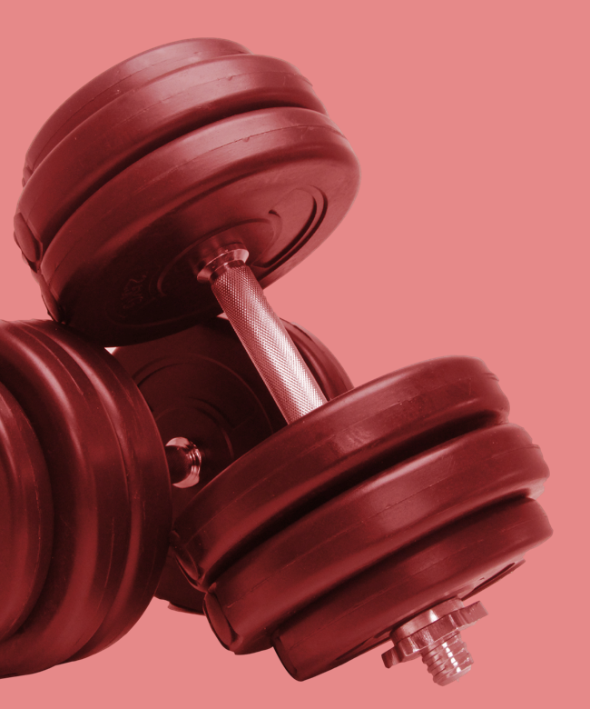

Il CrossFit
Il CrossFit si basa sulla varietà degli esercizi, alta intensità, movimenti funzionali...
CrossFit è un programma di forza e condizionamento costituito principalmente da un mix di esercizio aerobico, ginnastica ritmica (esercizi di peso corporeo) e sollevamento pesi olimpico. La CrossFit, Inc. descrive il suo programma di forza e condizionamento come "movimenti funzionali sempre variati eseguiti ad alta intensità in un arco di tempo lungo e col controllo della modalitá", con l'obiettivo dichiarato di migliorare la forma fisica, che definisce come "capacità di lavoro attraverso un lungo periodo e con controllo del modo."
Movimenti base del Crossfit
Il Crossfit si basa su varietà degli esercizi, alta intensità, movimenti funzionali.
squat Da una posizione eretta, passo ad una posizione accovacciata con le anche sotto le ginocchia, e ritorno in piedi.
Push-up Partendo con le mani all'altezza delle spalle, in modo tale che la lunghezza del segmento avente come estremi le mani sia leggermente maggiore rispetto a quello compresa tra le spalle; con il corpo disteso mi porto su, senza piegare il busto e poi ritorno giù all'altezza del pavimento. Le variazioni includono push-up "leggeri" con le ginocchia abbassate muovendosi solo con il busto e push-up con una sola mano, con le gambe più allargate.
Pull-ul Aggrappandosi ad una sbarra fissata in aria, in orizzontale, parto da una posizione sospesa a braccia tese. Successivamente porto il mento al di sopra della sbarra e torno giù senza toccare terra. Tra le variazioni più usate vi è il Kipping, dove ho uno slancio, usato come aiuto a completare il movimento.
Lounges Si parte da una posizione eretta, poi si fa un grande passo in avanti, si piega il ginocchio in avanti fino a quando il ginocchio posteriore non è a contatto con il terreno, e risalgo.
Sit-up Parto da una posizione supina, con le spalle a terra, per poi portarmi con le spalle sui fianchi e ritornare alla posizione di base. I piedi sono talvolta incrociati.
Dip agli anelli (Ring Dip) In aria con il corpo appoggiato sugli anelli e le braccia verticali diritte, piego le braccia, abbassando il corpo fino a quando la spalla scende sotto il gomito, e poi ritorno con le braccia dritte e tese. Per preparasi a questo esercizio, si utilizzano elastici, per fare esercizi intermedi.
La Storia del Crossfit
Il CrossFit è un sistema di fitness brevettato e creato da Greg Glassman ed è un marchio della CrossFit Inc., che fu fondata da Greg Glassman e Lauren Jenai nel 2000. Viene promosso sia come una filosofia dell'esercizio fisico, ma anche come uno sport agonistico di fitness; gli allenamenti di CrossFit prevedono allenamenti ad alta intensità e ad intervalli, sollevamento pesi olimpico, pliometria, powerlifting, ginnastica, sollevamento kettlebell, ginnastica artistica, strongman e altri esercizi. È praticato dai membri di oltre 13.000 palestre affiliate, circa la metà delle quali si trovano negli Stati Uniti e da persone che fanno allenamenti quotidiani completi (altrimenti noti come "WODs" (Workout Of the Day), o "gli allenamenti del giorno").
